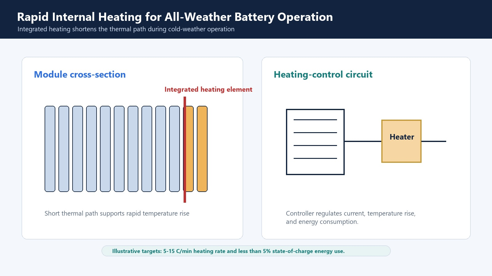

Fast charging and winter performance are frequently treated as separate engineering goals. Electrochemically, they are tightly linked: low temperature increases electrolyte viscosity and charge-transfer resistance, while high charging current increases polarization and can push the graphite potential into lithium-plating conditions.
Why Cold Conditions Increase Plating Risk
At low temperature, solvent viscosity rises, ionic conductivity falls, and lithium desolvation and solid-state diffusion slow. During charging, these losses increase the anode overpotential. If lithium arrives faster than graphite can intercalate it, metallic lithium can plate on the surface.
Lithium plating consumes cyclable lithium, thickens the interphase, and can create safety concerns. It is affected by temperature, state of charge, charging rate, electrode design, aging, and pressure.

Electrolyte Design Variables
Low-viscosity solvents can improve transport, but solvent choices also change flammability, oxidation stability, graphite compatibility, and gas generation. LiFSI and other co-salt strategies can improve conductivity and interphase chemistry, while requiring attention to aluminum corrosion and concentration.
Additives should be selected for the target anode and cathode. FEC, VC, sulfur-containing, nitrile, phosphorus-containing, and boron-containing additives can affect SEI/CEI chemistry, gas, impedance, and high-voltage stability. More additives are not automatically better; competitive reduction and depletion can make packages non-additive.
Thermal Strategy
Heating a cold cell before or during charging can reduce polarization and plating risk. Internal heating shortens the thermal path compared with external warming, but the design must control gradients, peak temperature, energy consumption, and fault behavior.
Higher temperature improves kinetics but also accelerates parasitic reactions. The control objective is therefore a temporary, uniform move into a safe fast-charge window followed by effective heat rejection.

Recommended Test Matrix
| Test | What it reveals |
|---|---|
| Cold discharge at 0, -10, and -20 C | Available energy, resistance, and recovery |
| Cold charge acceptance | Voltage polarization and chargeable capacity without plating |
| Fast charge over SOC windows | Where current must taper and heat generation rises |
| EIS before/after fast charge | Transport and interphase growth |
| Voltage relaxation / plating diagnostics | Evidence of reversible plated lithium |
| Gas and thickness tracking | Formulation-driven swelling and side reactions |
| Thermal mapping | Internal/external temperature gradients and cooling demand |
From Materials to Formulation
A useful program begins with a baseline electrolyte and changes one variable at a time: salt or co-salt ratio, solvent blend, additive package, and formation protocol. Promising systems then move into realistic loading, electrolyte quantity, current, temperature, and aged-cell conditions.
References
- Yang et al., Fast charging of lithium-ion batteries at all temperatures, Proceedings of the National Academy of Sciences 115, 7266-7271 (2018).
- Zeng et al., Extreme fast charging of commercial Li-ion batteries via combined thermal switching and self-heating approaches, Nature Communications 13, 6615 (2022).
- Waldmann et al., Temperature dependent ageing mechanisms in Lithium-ion batteries - A Post-Mortem study, Journal of Power Sources 262, 129-135 (2014).
- Tomaszewska et al., Lithium-ion battery fast charging: A review, eTransportation 1, 100011 (2019).
Discuss Your Material Screening Program
Winigen Materials supplies lithium salts, low-moisture solvents, and electrolyte additives for fast-charge and low-temperature screening, and provides custom electrolyte formulation support.
Contact Winigen MaterialsAll original diagrams on this page are © Winigen Materials unless otherwise noted. They may not be reproduced, modified, or redistributed without permission.